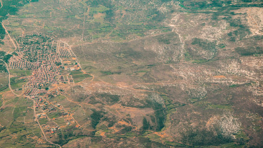

Agriculture Intelligence

Project Description
Using satellite generated data, Geo Gecko has created a portal, "ag int" that offers information to farmers and other stake holders on crop health and soil moisture at district level and farm level. The information is relevant for both commercial and small holder farms.
Project Details
Client:hgyuguf
Date: 26th April, 2014
Tags: Photography, Design
Visit the portal: Agri Intelligence